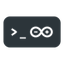
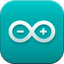

Install the Arduino tools¶
Arduino offers two options to manage the boards and libraries.
-
The Arduino-CLI provides a command-line interface for Arduino.
-
The Arduino IDE brings a GUI.
Note
If emCode is used on Windows Sub-system for Linux, install the Arduino tools on the Linux environment.
Use the Arduino-CLI¶
Install the Arduino-CLI¶
 To install the Arduino-CLI under ~/.local/bin,
-
Open a Terminal window;
-
Run
$ $ | |
- Ensure that
~/.local/binis listed in$PATH.
$ | |
Otherwise,
- Edit
~/.bashrc
$ | |
- Add
~/.local/binto$PATH
export PATH=$PATH:~/.local/bin
- Save and close with Ctrl+O and Ctrl+X.
For more information,
- Please refer to the Installation and Getting started pages.
Configure Arduino-CLI¶
To configure Arduino-CLI,
-
Open a Terminal window;
-
Run
$
| |
- Edit it with
$ | |
- Set the sketchbook folder;
user: ~/Projects/Arduino
- Save and close with Ctrl+O and Ctrl+X.
For more information,
- Please refer to the Configuration page of Arduino-CLI.
Install additional boards¶
-
Open a Terminal window;
-
Run
$ | |
The parameter arduino:avr refers to the name of the boards.
Add URLs for new boards¶
- Open the configuration file
arduino-cli.yaml;
$ | |
- Add the other boards;
board_manager:
additional_urls:
- https://adafruit.github.io/arduino-board-index/package_adafruit_index.json
- http://downloads.arduino.cc/packages/package_mbed_index.json
- https://raw.githubusercontent.com/espressif/arduino-esp32/gh-pages/package_esp32_index.json
- https://github.com/earlephilhower/arduino-pico/releases/download/global/package_rp2040_index.json
- https://files.seeedstudio.com/arduino/package_seeeduino_boards_index.json
- https://github.com/stm32duino/BoardManagerFiles/raw/main/package_stmicroelectronics_index.json
- https://www.pjrc.com/teensy/package_teensy_index.json
- https://github.com/ambiot/ambd_arduino/raw/master/Arduino_package/package_realtek.com_amebad_index.json
- Save and close with Ctrl+O and Ctrl+X.
Install additional libraries¶
-
Open a Terminal window;
-
Run
$ | |
Check and update the boards¶
-
Open a Terminal window;
-
Check the cores
$ $ | |
Check and update the libraries¶
-
Open a Terminal window;
-
Check the libraries.
$ $ | |
Use the Arduino IDE¶
Install the Arduino IDE¶
 To install the Arduino IDE,
-
Download and install Arduino 2.0 or later from Arduino under the
~/Applicationsfolder. -
Launch it.
Warning
All releases of Arduino prior to release 2.0, including 0023, 1.0 and 1.5, and series 1.6, 1.7 and 1.8, are deprecated and not longer supported.
-
Define the path of the sketchbook folder in the menu Arduino > Preferences > Sketchbook location.
-
Avoid spaces in the name and path of the sketchbook folder.
In this example, the sketchbook folder is ~/Projects/Arduino.
The Arduino 2.0 IDE provides two procedures to manage additional boards and libraries.
For more information,
- Please refer to the Getting Started with Arduino IDE 2 page of the Arduino IDE.
Configure the Arduino IDE¶
To configure the Arduino IDE,
-
Call the menu File > Preferences… or press Ctrl+, to open the Preferences window;
-
Confirm the Sketchbook location, for example
~/Projects/Arduino; -
Click on OK to close the window.
Install additional boards¶
The Arduino IDE includes a Boards Manager for downloading and installing additional boards. It relies on a list of URLs set in the Preferences pane.
Either
- Select the board icon on the left pane.
or
- Call the menu Tools > Board > Boards Manager…
A new pane lists all the boards available, already installed or ready for installation, based on a set of URLs.
- Select the board and click on Install.
If the board isn’t listed, the URL needs to be added manually.
For more information on the installation of the additional boards on the Arduino IDE,
- Please refer to the Installing additional Arduino Cores page on the Arduino website.
For more information on the installation of the additional boards on the Arduino IDE,
- Please refer to the Boards Manager page on the Arduino website.
Add URLs for new boards¶
The Boards Manager lists the boards based on a set of URLs. To add a new board, the relevant URL should be added. The URL corresponds to a JSON file.
https://adafruit.github.io/arduino-board-index/package_adafruit_index.json
http://downloads.arduino.cc/packages/package_mbed_index.json
https://raw.githubusercontent.com/espressif/arduino-esp32/gh-pages/package_esp32_index.json
https://github.com/earlephilhower/arduino-pico/releases/download/global/package_rp2040_index.json
https://files.seeedstudio.com/arduino/package_seeeduino_boards_index.json
https://github.com/stm32duino/BoardManagerFiles/raw/main/package_stmicroelectronics_index.json
https://www.pjrc.com/teensy/package_teensy_index.json
https://github.com/ambiot/ambd_arduino/raw/master/Arduino_package/package_realtek.com_amebad_index.json
- Call the menu Arduino > Preferences or press Cmd+,.
This is the preference window, with a list of URLs at Additional Boards Manager URLs.
-
Select the Settings pane.
-
Click on the button at the right of Additional Boards Manager URLs.
-
Paste the URL with the JSON file. There should be one URL per line.
-
Click OK.
-
Call the menu Tools > Board > Boards Manager…
For more information on the installation of the additional boards on the Arduino IDE,
- Please refer to the Boards Manager page on the Arduino website.
Manage specific boards¶
Some boards require a specific procedure.
- Please refer to the Install section for the board under Manage the boards.
Update the boards¶
To update the boards,
-
Call the menu Tools > Board > Boards Manager…
-
Set the Type to Upgradable.
The left pane displays all the boards to be updated.
-
Select the board and click on Update.
-
Once all boards are updated, click on Close.
Install additional libraries¶
The Arduino IDE includes a Libraries Manager for downloading and installing additional libraries. It relies on a list of URLs managed centrally by Arduino.
Either
- Select the library icon on the left pane.
or
- Call the menu Sketch > Include Library > Manage Libraries…
A new window lists all the libraries available, already installed or ready for installation, based on a set of URLs.
- Select the library and click on Install.
For more information on the installation of the additional libraries on the Arduino IDE,
- Please refer to the Library Manager page on the Arduino website.
Update the libraries¶
To update the libraries,
-
Call the menu Sketch > Include Library > Manage Libraries…
-
Set the Type to Upgradable.
The left pane displays all the libraries to be updated.
-
Select the library and click on Update.
-
Once all boards are updated, click on Close.
Created: September 14, 2023